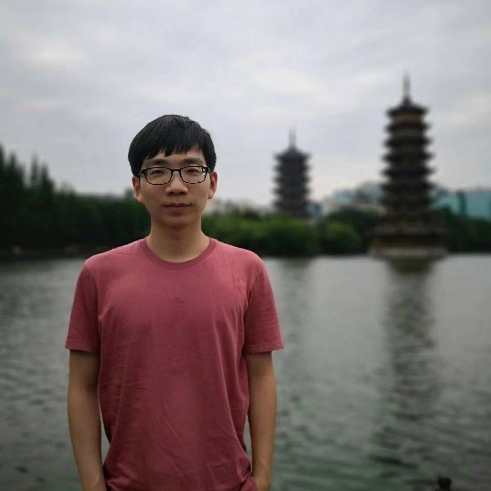

|
Guixu Lin
Guixu Lin is a 2nd year Ph.D. student at the Graduate School of Information Science and Technology (IST), the University of Tokyo (Utokyo), advised by Prof. Yinqiang Zheng.
Currently, he is worked with Prof. Shengfeng He at Singapore Management Univeristy (SMU) as a visiting PhD student.
Guixu Lin receieved his Master degree from Utokyo in March 2023, advised by Prof. Ryosuke Shibasaki.
Prior to Utokyo, Guixu Lin worked as a Reaserach Assistant at the Department of Computer Science and Engineering of Southern University of Science and Technology (Sustech), supervised by Prof. Xuan Song from 2019 to 2021.
And he received his Bachelor degree in South China University of Technology (SCUT).
Guixu Lin is generally interested in computer vision, image and video processing. His current research interest lies in event-cameras-based image and video restoration.
Feel free to contact Guixu Lin via his email!
Email /
Google Scholar /
Github
|

|
News
[2024 July] Two papers are accepted by ACMMM24.
[2023 July] One paper is accepted by ACMMM23.
|
Publications
Event-guided Frame Interpolation and Dynamic Range Expansion of Single Rolling Shutter Image (ACMMM, 2023)
Guixu Lin, Jin Han, Mingdeng Cao, Zhihang Zhong, Yinqiang Zheng.
Exploring intercity regional similarity using worldwide location-based social network data (demo paper)(SIGSPATIAL, 2022)
Zipei Fan, Guixu Lin, Wei Yuan, Ryosuke Shibasaki, Pengpeng E, Xuan Song.
Internet of Things positioning technology based intelligent delivery system (IEEE Transactions on Intelligent Transportation Systems, 2022)
Yuhao Yao, Haoran Zhang, Lifeng Lin, Guixu Lin, Ryosuke Shibasaki, Xuan Song, Keping Yu.
|
Academic Services
[2024 July] Serve as reviewer for NeurlPS 2024.
[2024 June] Serve as reviewer for ACM MM 2024.
|
|
{kind=link}